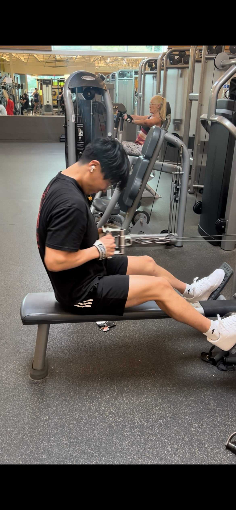
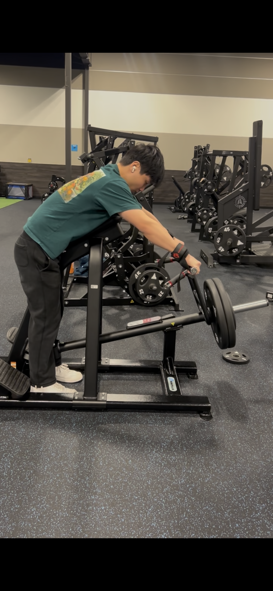
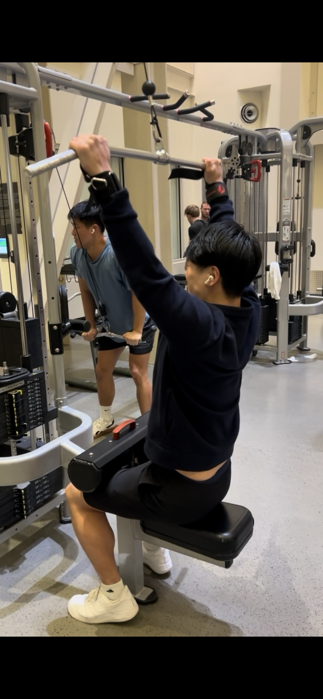
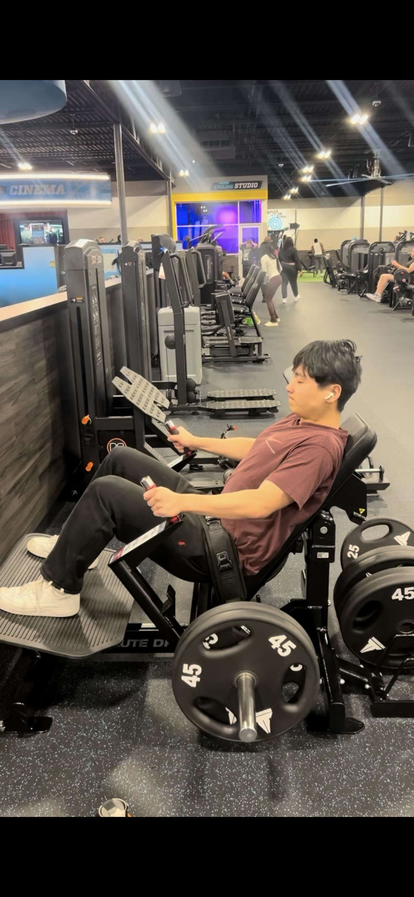
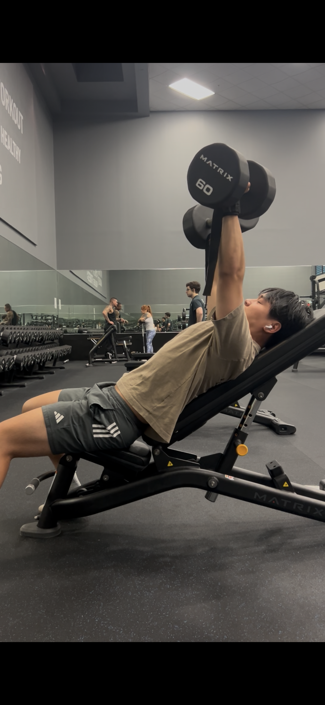
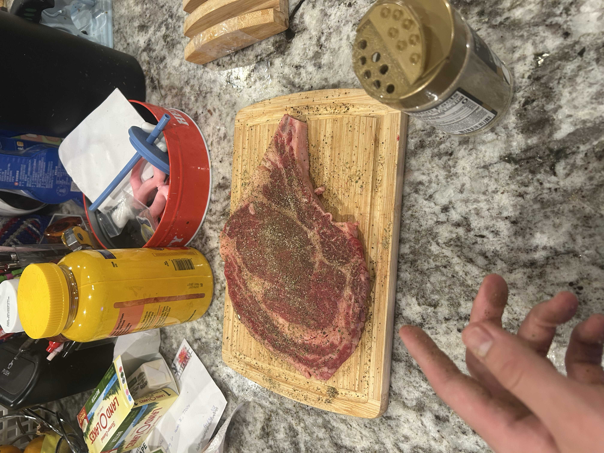
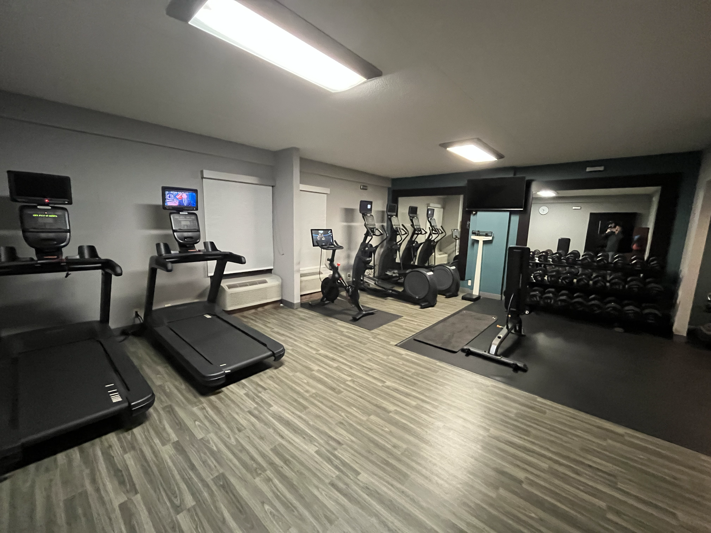
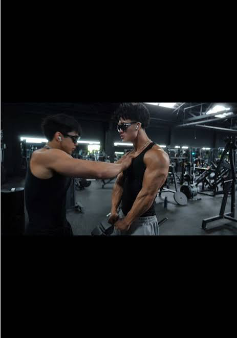

Science-Based Lifting for Beginners
Lifting can get confusing really fast because there is so much different advice online. This website is meant to make training simpler for beginners.
The main idea is to train hard, use exercises that are easy to repeat, recover properly, and focus on the things that actually matter for building muscle.
The Beginner Blueprint
Beginners do not need a complicated program. A good routine should train every major muscle group consistently, use exercises that are easy to repeat, and leave enough time to recover.
- Train each muscle around two times per week
- Use stable exercises that are easy to progress on
- Train close to failure on most working sets
- Keep your technique and range of motion consistent
- Take enough rest days to recover
Why I Like an Upper / Lower Split
An upper/lower split is simple because it separates training into upper body days and lower body days. This makes it easier to train each muscle more than once per week without being in the gym every day.
| Day | Workout |
|---|---|
| Monday | Upper Body |
| Tuesday | Lower Body |
| Wednesday | Rest |
| Thursday | Upper Body |
| Friday | Lower Body |
| Saturday | Rest |
| Sunday | Rest |
Choosing Good Exercises
For beginners, I think exercises should be simple, repeatable, and easy to progress on. Machines and cables can be really useful because they give more stability and make it easier to focus on the muscle being trained.
Free weights still work too, especially if you enjoy them. The most important thing is using exercises you can do consistently with good form and a similar range of motion every workout.

Seated Cable Row
Cable rows train the back and biceps. I like them because the cable keeps resistance on the movement and it is easy to repeat the same range of motion every set.

Chest Supported T-Bar Row
This is another back exercise. The chest support gives more stability, so I do not have to worry as much about balancing or using momentum.

Lat Pulldown
Lat pulldowns mainly train the lats and upper back. It is easy to change the weight and keep the movement controlled.

Hip Thrust
Hip thrusts mainly train the glutes. Using the machine makes the setup simple and lets me focus more on the movement itself.

Incline Dumbbell Press
Incline dumbbell press trains the chest, shoulders, and triceps. This is a free weight exercise I enjoy, so I still keep it in my training even though I use a lot of machines too.
How Hard Should You Train?
A lot of beginners focus too much on doing a huge number of reps. What matters more is how hard the set actually is.
I usually like working in a lower rep range, around 6 to 8 reps. The goal is to use a weight that is challenging while still keeping the movement controlled.
- Choose a weight you can control.
- Use the same range of motion on every rep.
- Keep going until the last few reps are very difficult.
- Stop if your form starts breaking down badly.
Reps in Reserve
One way to judge intensity is by thinking about how many reps you had left before failure. This is sometimes called reps in reserve, or RIR.
| RIR | What It Means |
|---|---|
| 3+ | The set was probably too easy |
| 1-2 | Very challenging and close to failure |
| 0 | You reached failure |
Recovery and Nutrition
Training hard is only part of building muscle. Your body also needs time to recover, enough sleep, and enough food to actually make progress.
I try to get plenty of protein and usually aim for around 1 gram of protein per pound of lean body mass. I also think cooking your own food makes it easier to know what you are actually eating.

Things That Help Recovery
- Get enough sleep every night
- Take rest days instead of training hard every day
- Eat enough protein and total calories
- Drink enough water
- Give sore muscles time to recover
Don't Forget Cardio
Lifting is great for building muscle, but it is not the only kind of exercise that matters. Cardio is important for heart health, endurance, and can also help if your goal is losing weight.
Cardio also does not have to mean spending an hour on a treadmill. Running, biking, playing sports, or even going on long walks are all ways to stay active outside of lifting.
My Approach
- Lift consistently during the week
- Add some cardio for general health
- Choose cardio that you actually enjoy doing
- Do not let cardio interfere with recovery from lifting
Consistency Matters More Than Perfection
Your training will not always go exactly according to plan. Sometimes school gets busy, you travel, or you do not have access to your normal gym. Missing a perfect workout is not the end of your progress.
If you understand the basic movement patterns and what muscles you are trying to train, you can usually improvise with dumbbells, cables, and whatever equipment is available.

When Your Normal Gym Is Not Available
- Use dumbbells instead of machines when needed
- Use cables to train several different muscle groups
- Keep the workout simple
- Do not worry if one workout is different from your normal program
- Get back to your regular routine when you can
Make Training Something You Enjoy
The best workout plan is not very useful if you hate doing it. I think beginners should choose exercises they enjoy and find ways to make training something they actually look forward to.
Training with friends can make workouts more fun and help with consistency. Some of my favorite gym memories are honestly just lifting with friends and getting food together afterward.
Ways to Keep Training Fun
- Choose exercises you actually enjoy
- Train with friends sometimes
- Celebrate small improvements
- Do not make every workout feel like a test
- Find a routine you can see yourself doing long term
Beginner Lifting Questions
If you are new to lifting, you probably have questions. This form does not actually submit anywhere, but it shows the kind of information I would want to know before giving someone advice.
Don't Compare Yourself to Fitness Influencers
Social media can make lifting feel more complicated than it really is. A lot of fitness content shows people with years of training experience, perfect lighting, good genetics, and unrealistic physiques.
Beginners should focus more on their own progress instead of trying to look like somebody they see online. Getting stronger, building muscle, and staying consistent takes time.

What to Focus on Instead